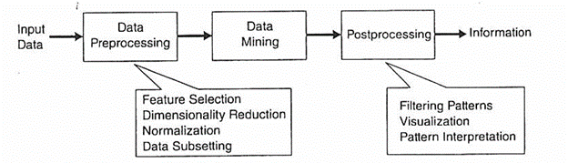
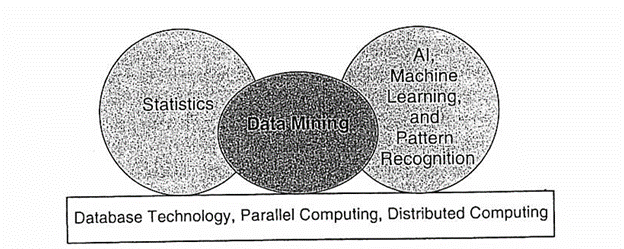
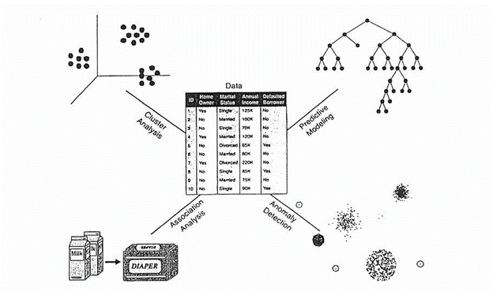
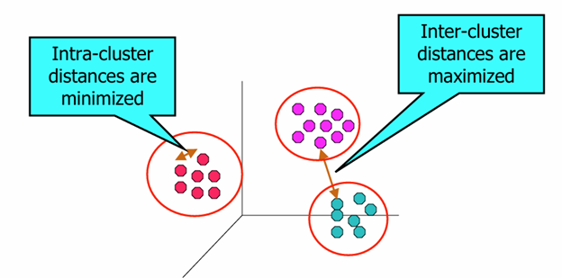
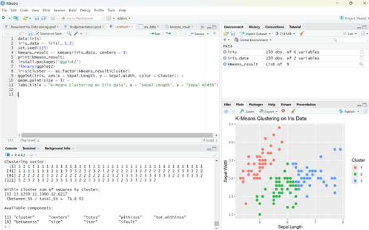
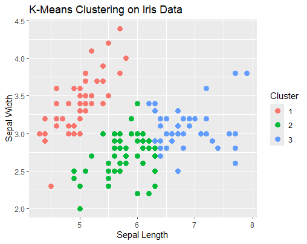

Data mining for decision making
Question: In this era, how often do you think data doubles in the world?
Answer: Currently, the amount of accessible data doubles every two years (Open Science Conference, 2014). A capable organization is one that can manage its information effectively.
1. Introduction
Today, with the expansion of information systems and the large volume of data stored in these systems, there is a need for a tool that can process the stored data and provide the information resulting from this processing to decision makers for decision-making.
2. What Is Data Mining?
Data mining is the process of automatically discovering useful information in large data repositories. Data mining techniques are deployed to scour large databases to find novel and useful patterns that might otherwise remain unknown. They also provide capabilities to predict the outcome of a future observation.
3. Data Mining and Knowledge Discovery
Data mining is an integral part of knowledge discovery in databases (KDD), which is the overall process of converting raw data into useful information. This process consists of several transformation steps, from data preprocessing to postprocessing of data mining results.
Figure 1 the process of knowledge discovery in database (KDD).

4. Steps of KDD:
Input Data: Data can come from various formats (flat files, spreadsheets, relational tables) and locations (centralized repositories or distributed sites).
Data Processing: Transform raw data into an analyzable format:
- Fuse data from multiple sources
- Clean data to remove noise and duplicates
- Select relevant records and features for the task
- Data Mining: The core process of discovering patterns.
- Post processing: Interpreting, visualizing, and validating results.
5. Relationship with Other Fields
Data mining utilizes exploratory data analysis from statistics to uncover hidden and unknown information from vast datasets. It also has close ties with Artificial intelligence (AI) and machine learning (ML). As such, it integrates database theories, AI, ML, and statistics to create practical applications.
Figure 2 shows the relationship of data mining to order areas.

6. Data Mining Tasks
Data mining tasks are generally categorized into two main types:
- Predictive Tasks:
- Objective: Predict the value of one attribute based on others.
- Key Terms:
- Target/Dependent Variable: The attribute to be predicted.
- Explanatory/Independent Variables: Attributes used for prediction.
- Descriptive Tasks:
- Objective: Identify patterns (e.g., correlations, trends, clusters, trajectories, anomalies) that summarize relationships in data.
- Characteristics: Exploratory, often requiring postprocessing to validate and explain results.
Figure 3: Illustrates four core data mining tasks (patterns, trends, etc.).

7. Importance of Data Mining for Decision Making
Applications:
- Businesses: Predict trends and improve marketing strategies.
- Healthcare: Identify disease patterns for early intervention.
- Education: Enhance student outcomes with predictive analysis.
- etc.
Impact:
- Provides actionable insights.
- Reduces risks through data-driven decisions.
- improved decision quality.
- increased efficiency and a competitive advantage.
8. Example Use Cases
Data mining can use large datasets from customer interactions to better understand customers and answer key questions:
- What products should be offered to potential customers?
- When does a customer need a specific product?
- What are the next likely purchases for this customer?
- What is the relationship between a buyer’s age and their purchasing behavior?
Insight:
Customer behavior data is not random but reflects needs, preferences, and tendencies. The goal of data mining is to identify patterns in past data to clarify these needs and preferences, aiding future decisions.
9. Classroom practice
Of course, before that, I want to review some information together.
- What is Cluster Analysis?
Finding groups of objects such that the objects in a group will be similar (or related) to one another and different from (or unrelated to) the objects in other groups.
Figure 4: Illustrates sample clustering

One of the methods of clustering data is K-means.
Steps in K-means Clustering:
- Choosing k: Decide on the number of clusters you want to form.
- Initializing Centroids: Randomly select k data points as initial centroids.
- Assigning Data Points: Each data point is assigned to the nearest centroid, forming clusters.
- Updating Centroids: Calculate new centroids as the average of all points in each cluster.
Let’s solve a clustering example together step by step:
- Please load sample dataset: (The iris dataset is a built-in dataset in R that contains measurements on 4 different attributes (in centimeters) for 50 flowers from 3 different species.)
# R code example
data(iris)- Now we want to divide the data into 3 clusters based on two of the 4 features:
iris_data <- iris[, 1:2]
set.seed(123)
kmeans_result <- kmeans(iris_data, centers = 3)- Install ggplot2 package and visualize results:
print(kmeans_result)
install.packages("ggplot2")
library(ggplot2)
iris$Cluster <- as.factor(kmeans_result$cluster)
ggplot(iris, aes(x = Sepal.Length, y = Sepal.Width, color = Cluster)) +
geom_point(size = 3) +
labs(title = "K-Means Clustering on Iris Data", x = "Sepal Length", y = "Sepal Width")The output is as follows:
Figure 5:Clustering example results
 
10. Conclusion
-Data Mining for Decision Making can empower organizations to act on patterns, trends, and predictions.
Future Directions:
- Real time data mining for dynamic decision-making.
- Enhanced predictive analytics with AI integration.
11.References
- Open Science Conference. (2014). Digital data doubling every two years: A report on the rapid growth of information in the digital age. Open Science Conference Proceedings. Retrieved from https://www.open-science-conference.eu/wp-content/uploads/2017/03/03_Abstract.pdf
- Tan, P., Steinbach, M., & Kumar, V. (2006). Introduction to data mining. Person.
- Hahsler, M. (2024). An R companion for introduction to data mining. Figshare.https://doi.org/10.6084/m9.figshare.26750404